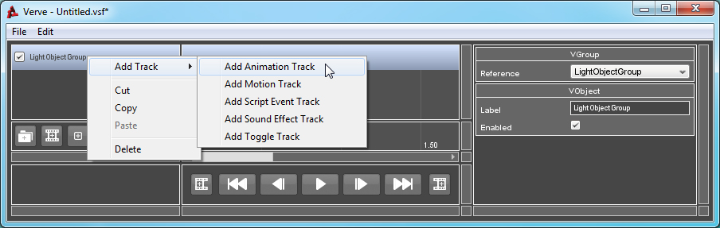
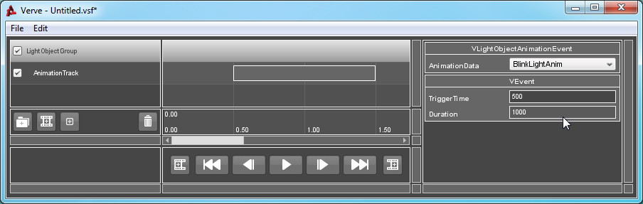

Tutorial : Light Object Animation
Objects: VLightObjectAnimationTrack, VLightObjectAnimationEvent
An Animation Event will tell the reference object to start playing an animation upon triggering. The animation that is to be played is defined by the Event's "AnimationData" property. If an invalid animation name is specified, no animation will play.
While VLightObjectAnimationTrack must be added to a VLightObjectGroup object which must reference a valid LightBase object, or derived class.
Since the LightBase class networks its animation properties, Playing or Pausing the root Controller will affect playback on all clients.
How to Use:
To toggle a Light Object, you must first create a valid Light Object Group. If you are unsure of how to create or validate a Group, click here.
Right-Click on the Group, go to "Add Track" and select "Add Animation Track".

Right-Click on the Track and select "Add Event".

Select the newly created Event. The Property List window will refresh and inspect the Event. Change the "AnimationData" property to the name of the animation you wish to have played upon triggering.
